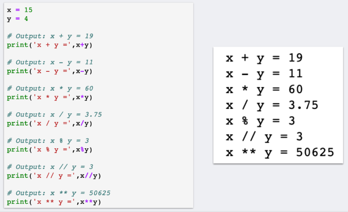
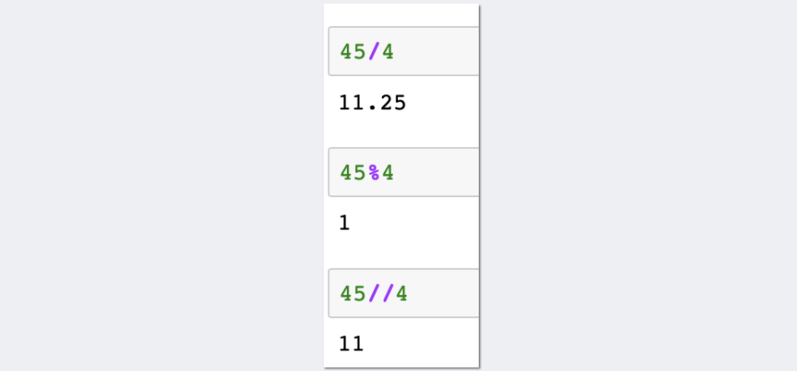
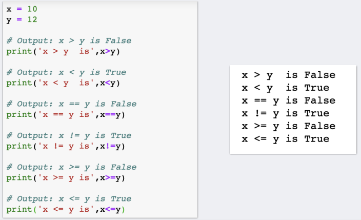
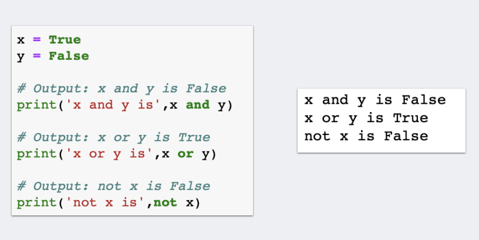

Python Operators
What are operators in python?
Operators are special symbols in Python that carry out arithmetic or logical computation. The value that the operator operates on is called the operand.
Expression Operation and Operand
y = x² + 2x + 1
y,x,1 is operand
=, +,exponent is operator
y = x² + 2x + 1 is expression
Arithmetic operators
Arithmetic operators are used to perform mathematical operations like addition, subtraction, multiplication, etc.
| Operator | Meaning | Example |
|---|---|---|
| + | Add two operands or unary plus | x + y+ 2 |
| - | Subtract right operand from the left or unary minus | x - y- 2 |
| * | Multiply two operands | x * y |
| / | Divide left operand by the right one (always results into float) | x / y |
| % | Modulus - remainder of the division of left operand by the right | x % y (remainder of x/y) |
| // | Floor division - division that results into whole number adjusted to the left in the number line | x // y |
| ** | Exponent - left operand raised to the power of right | x**y (x to the power y) |
Example

Operator Precedence
The operator precedence in Python is listed in the following table. It is in descending order (upper group has higher precedence than the lower ones).
| Operators | Meaning |
|---|---|
() |
Parentheses |
** |
Exponent |
+x,-x,~x
|
Unary plus, Unary minus, Bitwise NOT |
*
,/,//,%
|
Multiplication, Division, Floor division, Modulus |
+,-
|
Addition, Subtraction |
<<,>>
|
Bitwise shift operators |
& |
Bitwise AND |
^ |
Bitwise XOR |
| |
Bitwise OR |
==,!=,>,>=,<,<=,is,is not,in,not in
|
Comparisons, Identity, Membership operators |
not |
Logical NOT |
and |
Logical AND |
or |
Logical OR |
Example

Comparison Operators
Comparison operators are used to compare values. It returns either or according to the
condition.TrueFalse
| Operator | Meaning | Example |
|---|---|---|
| > | Greater than - True if left operand is greater than the right | x > y |
| < | Less than - True if left operand is less than the right | x < y |
| == | Equal to - True if both operands are equal | x == y |
| != | Not equal to - True if operands are not equal | x != y |
| >= | Greater than or equal to - True if left operand is greater than or equal to the right | x >= y |
| <= | Less than or equal to - True if left operand is less than or equal to the right | x <= y |
Example

Logical Operators
Logical operators are the and,or,not operators.
| Operator | Meaning | Example |
|---|---|---|
| and | True if both the operands are true | x and y |
| or | True if either of the operands is true | x or y |
| not | True if operand is false (complements the operand) | not x |
Example

Bitwise Operators
Bitwise operators act on operands as if they were strings of binary digits. They operate bit by bit, hence the name.
For example, 2 is 10 in binary and 7 is 111
In the table below: Let x = 10 (0000 1010 in binary) and
y = 4
(0000 0100 in binary)
| Operator | Meaning | Example |
|---|---|---|
| & | Bitwise AND | x & y = 0 (0000 0000) |
| | | Bitwise OR | x | y = 14 (0000 1110) |
| ~ | Bitwise NOT | ~x = -11 (1111 0101) |
| ^ | Bitwise XOR | x ^ y = 14 (0000 1110) |
| >> | Bitwise right shift | x >> 2 = 2 (0000 0010) |
| << | Bitwise left shift | x << 2 = 40 (0010 1000) |
Assignment Operators
Assignment operators are used in Python to assign values to variables.
a = 5 is a simple assignment operator that assigns the value 5 on the right to the variable a
on the left.
There are various compound operators in Python like a += 5 that adds to the variable and later assigns
the same. It is equivalent to a = a + 5.
| Operator | Example | Equivalent to |
|---|---|---|
| = | x = 5 | x = 5 |
| += | x += 5 | x = x + 5 |
| -= | x -= 5 | x = x - 5 |
| *= | x *= 5 | x = x * 5 |
| /= | x /= 5 | x = x / 5 |
| %= | x %= 5 | x = x % 5 |
| //= | x //= 5 | x = x // 5 |
| **= | x **= 5 | x = x ** 5 |
| &= | x &= 5 | x = x & 5 |
| |= | x |= 5 | x = x | 5 |
| ^= | x ^= 5 | x = x ^ 5 |
| >>= | x >>= 5 | x = x >> 5 |
| <<= | x <<= 5 | x = x << 5 |
Special Operators
Python language offers some special types of operators like the identity operator or the membership operator. They are described below with examples.
Identity Operators
is>and are the identity operators in Python. They are used to check if two values (or variables) are located on the same
part of the memory. Two variables that are equal does not imply that they are identical.is not
| Operator | Meaning | Example |
|---|---|---|
| is | True if the operands are identical (refer to the same object) | x is True |
| is not | True if the operands are not identical (do not refer to the same object) | x is not True |
Example
Identity Operators in Python
x1 = 5 y1 = 5 x2 = 'Hello' y2 = 'Hello' x3 = [1,2,3] y3 = [1,2,3] # Output: False print(x1 is not y1) # Output: True print(x2 is y2) # Output: False print(x3 is y3)Output
False True FalseHere, we see that and are integers of the same values, so they are equal as well as identical. Same is the case with and (strings).
x1y1x2y2But and are lists. They are equal but not identical. It is because the interpreter locates them separately in memory although they are equal.
x3y3
Membership Operators
inand are the membership operators in Python. They are used to test whether a value or variable is found in a sequence
(string, list, tuple, set and dictionary).not in
| Operator | Meaning | Example |
|---|---|---|
| in | True if value/variable is found in the sequence | 5 in x |
| not in | True if value/variable is not found in the sequence | 5 not in x |
Example
Membership Operators in Python
x = 'Hello world' y = {1:'a',2:'b'} # Output: True print('H' in x) # Output: True print('hello' not in x) # Output: True print(1 in y) # Output: False print('a' in y)Output
True True True FalseHere, is in but is not present in (remember, Python is case sensitive). Similarly, is key and is the value in dictionary . Hence, returns .
'H'x'hello'x1'a'y'a' in yFalse